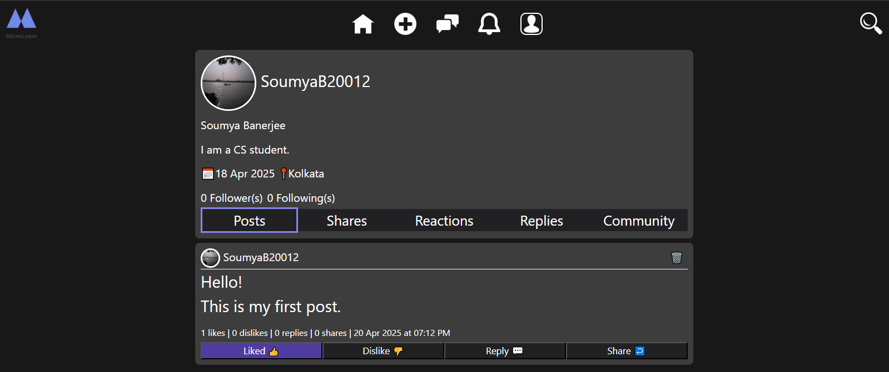
Microloom: A Social Media Web Application
Tech Used: ASP.NET 4.8, C#, SignalR, HTML, CSS, JavaScript, Bootstrap, MS SQL Server
- Implemented authentication and authorization via cookies; used OTP verification for password resets.
- Implemented a follow-and-followers system, enabling users to follow others and be followed for enhanced social interaction.
- Enabled post creation, reactions (likes and dislikes), sharing, and commenting.
- Integrated real-time messaging with SignalR and built a notification system for user interactions.
- Designed a profile system allowing users to edit their profiles, upload or remove profile pictures, and view interaction history.
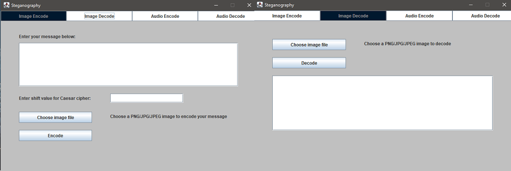
Image and Audio Steganography Tool
Tech Used: Java (Core), Swing Framework
- Built a Java GUI app for LSB steganography to hide encrypted text in PNG and WAV files.
- Used Caesar cipher with a user-defined shift value; embedded cipher key within hidden data.
- Applied object-oriented principles to manipulate RGB pixel data for image-based steganography.
- Encoded hidden data into the least significant bit of the least significant byte in WAV audio samples, supporting Little Endian format.
- Implemented custom decoding logic for accurate extraction and decryption from image and audio files.

Huffman Encoder and Decoder
Tech Used: Java (Core), Swing Framework
- Developed a Java-based file compression and decompression tool using Huffman encoding and a frequency-sorted Huffman tree.
- Implemented custom Huffman tree construction based on byte frequency and lexicographic ordering for deterministic output.
- Created a
.hufffile format that stores compressed binary data along with metadata like original extension and frequency table. - Designed a bit-level encoding system with custom stream handling for accurate data representation.
- Ensured lossless restoration during decompression by preserving structural and frequency integrity.
- Built an intuitive GUI with Java Swing to support seamless file selection, compression, and decompression.
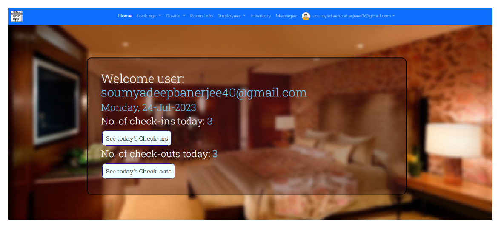
Hotel Management System and Hotel Booking Website
Tech Used: ASP.NET 4.8, C#, HTML, CSS, JavaScript, Bootstrap, MS SQL Server
- The application offers modules for room booking, cancellations, check-in/out, guest and employee management, inventory tracking, and an admin dashboard.
- OTP-based authentication is used during password recovery; an OTP is sent to the user's email, ensuring secure identity verification before reset.
- Registration is supported for both hotel staff and website users, with options like “Remember Me” for ease of login and user session persistence via cookies.
- The system supports both employee and customer portals, ensuring streamlined interactions from both ends with intuitive UI layouts and guided navigation.
- It provides real-time data on room availability and guest status, allowing efficient room allocation and operational decision-making.
- Features like form auto-fill for returning guests, validation controls, and a step-by-step booking flow enhance usability and minimize input errors.
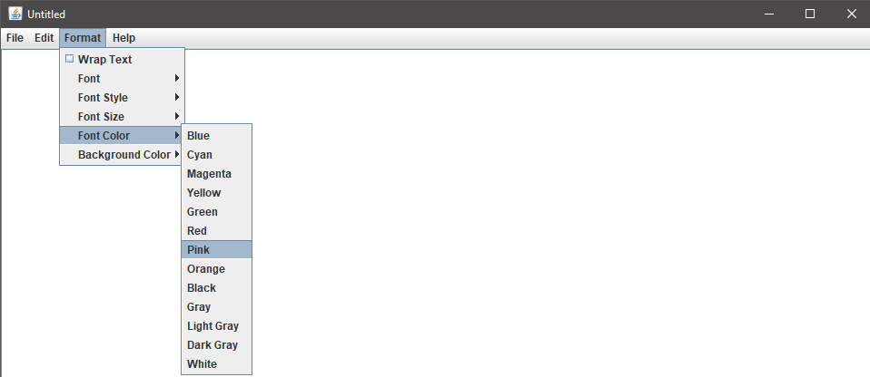
Text Editor
Tech Used: Java (Core), Swing Framework
- Developed a fully functional Java-based text editor with support for creating, editing, and saving text files.
- Implemented standard editing features including undo/redo, cut, copy, paste, and print with keyboard shortcuts.
- Designed a custom Find and Replace dialog with support for case-sensitive search and batch replacement.
- Enabled rich text customization with dynamic font selection, styling (bold, italic), sizing, and color options.
- Added support for runtime theming with customizable background and font colors.
- Integrated date/time insertion at cursor position using Java’s
LocalDateTimeAPI.
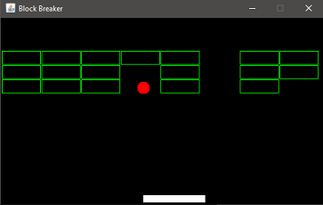
Block Breaker
Tech Used: Java (Core), Swing Framework
- Developed a Java-based brick breaker game using Swing for GUI and event handling, simulating classic arcade mechanics.
- Implemented real-time collision detection between ball, paddle, and dynamically generated bricks.
- Integrated audio feedback using the Java Sound API to enhance user interaction with custom sound effects.
- Managed game states and input handling with key listeners and timers for smooth gameplay.
- Utilized object-oriented principles to separate concerns like rendering, physics, and input.
- Designed responsive paddle control and angle-based ball reflection logic using trigonometric functions (sin/cos) for realistic movement.
- Built win/lose conditions and a modular code structure to support future enhancements or levels.
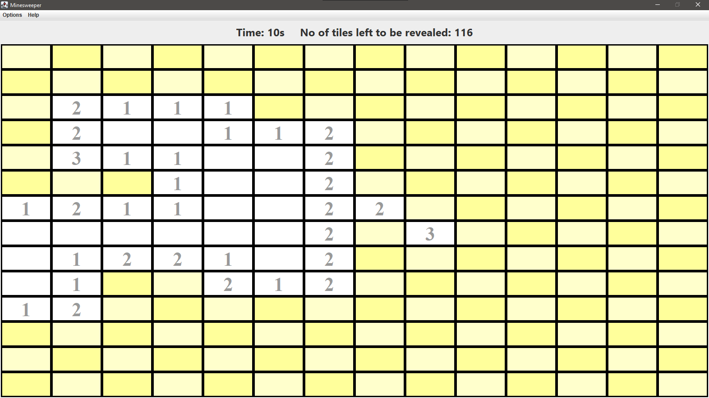
Minesweeper
Tech Used: Java (Core), Swing Framework
- Safe First Click: Mines are generated after the first click, ensuring it's always safe.
- Auto-Reveal: Clicking an empty tile triggers a flood fill to uncover nearby safe tiles.
- Clean GUI: A 14x14 grid with colored buttons and bold text for a smooth interface.
- Live Timer: Displays elapsed time and tiles left, updating every second.
- Click Controls: Left-click reveals; right-click places or removes a 🚩 flag.
- Win/Loss Detection: Shows 💥 on mines if clicked; declares win when all safe tiles are revealed.
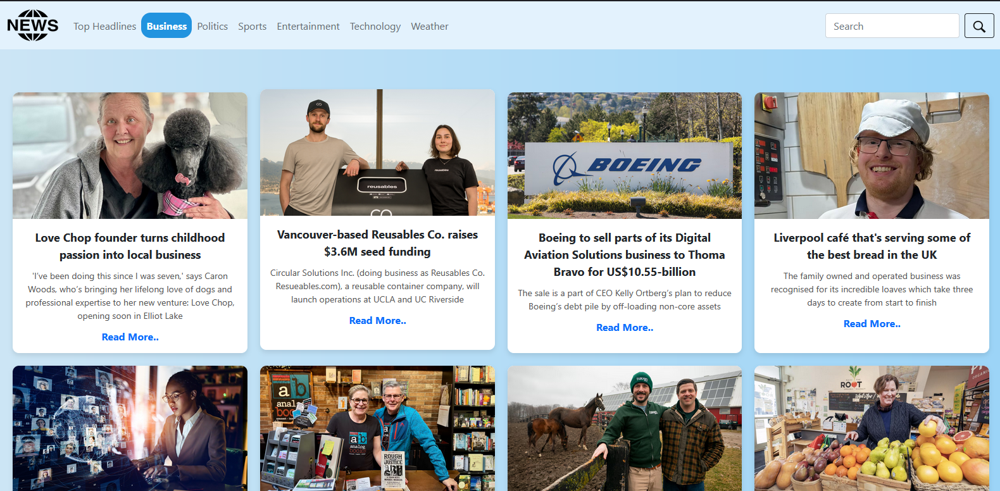
News and Weather Website
Tech Used: HTML, CSS, Bootstrap, JavaScript, PHP
- Trending news fetched using the GNEWS API.
- Tabbed layout for Top Headlines, Business, Politics, Sports, Entertainment, and Technology.
- Search bar to find news on specific topics.
- Weather data via OpenWeatherMap API showing current and forecast conditions.
- PHP backend to hide API keys and secure API calls..
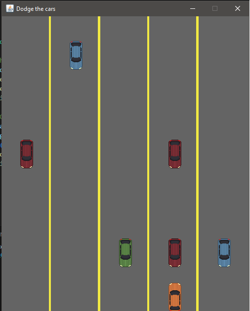
Dodge The Obstacles
Tech Used: Java (Core), Swing Framework
- Player control via arrow keys to switch between 5 lanes.
- Obstacles generated randomly across lanes and move downward continuously.
- Collision detection ends the game with an explosion sound and a game over screen.
- Scoring system increases when obstacles leave the screen and plays a score sound.
- Smooth animation using a Timer with 10ms delay for consistent updates.
- Images and sounds loaded from assets folder for player, obstacles, road, and effects.
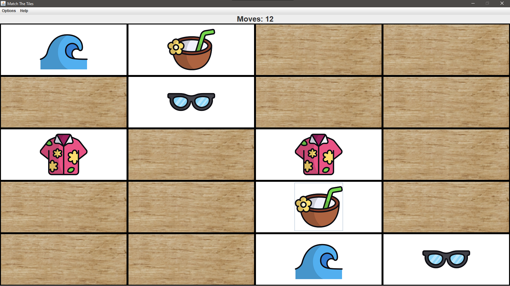
Match The Tiles
Tech Used: Java (Core), Swing Framework
- Objective of the game is to flip and match identical tile pairs to clear the entire board.
- 20 tiles arranged in a 5x4 grid with 10 pairs of images.
- Images revealed for 3 seconds at the start, then hidden with a wood texture.
- Click two tiles to reveal and match; matched pairs stay visible.
- Move counter updates after every tile pair selection.
- Win condition triggers a message once all tiles are matched.
- Click sound effect for feedback.
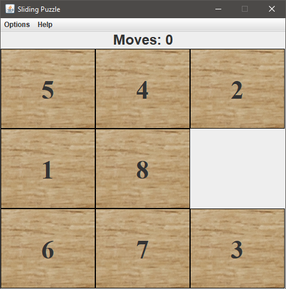
Eight Puzzle (A* algorithm)
Tech Used: Java (Core), Swing Framework
- Objective of the game is to arrange numbered tiles in order by sliding them into the empty space.
- Designed and implemented an interactive desktop application for solving the classic 8-puzzle game using the A* algorithm.
- Built a custom Java Swing GUI that allows users to generate a random puzzle or manually configure the board.
- Integrated solvability checks using inversion counting to ensure only valid puzzles are accepted.
- Applied the Manhattan distance heuristic to guide the A* algorithm and visualized each intermediate puzzle state.
- Included features like move tracking, audio feedback, and an AI auto-solve mode for enhanced interactivity.
- Structured the project with a modular architecture separating UI, game logic, and AI components for maintainability.
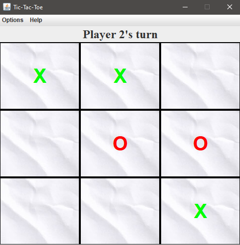
Tic-Tac-Toe (Minimax algorithm)
Tech Used: Java (Core), Swing Framework
- Developed a Java Swing-based Tic-Tac-Toe game with support for Player vs Player, Player vs AI, and AI vs Player modes.
- Implemented a strategic AI opponent powered by the Minimax algorithm for optimal gameplay.
- The AI recursively simulates future moves, evaluates board states, and selects paths that guarantee a win or draw.
- Provided a user-friendly interface allowing players to choose turn order dynamically before the game starts.
- Built a clean, intuitive GUI with modular code design to support easy maintenance and future enhancements.
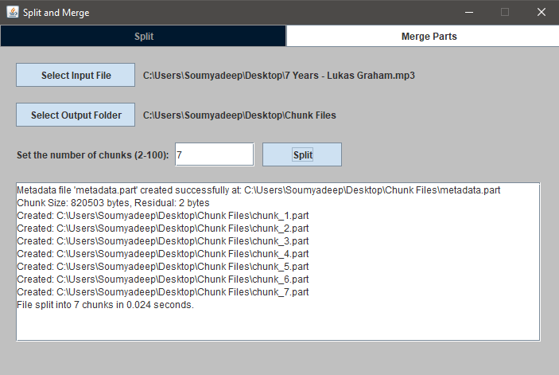
File Split and Merge Utility Tool
Tech Used: Java (Core), Swing Framework
- Created a Java Swing-based GUI application to split large files into smaller parts and reconstruct them.
- Designed and wrote custom chunk headers containing index, magic number, and size for accurate mapping.
- Implemented metadata generation to preserve original file name, size, and number of chunks.
- Enabled merge functionality to work with or without metadata using chunk-level validation.
- Used HashMap-based indexing to restore chunk order even when filenames are tampered.
- Built in checks for duplicate chunks, index gaps, and magic number mismatches during merging.
- Ensured fault tolerance by allowing users to proceed with merging even if metadata is corrupted.